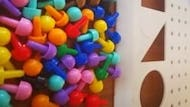

Unlocking your child's potential
We are an
independent private Occupational Therapy practice located in Pinetown, Durban, South Africa.
We specialise in assessing and treating problems that can affect children at home, at school or with friends.
Our therapy is fun and we encourage family participation.
Our specialised input enables children to discover their strengths, to overcome their difficulties and so unlock their true potential.
We offer free telephone consultations
During this 15
minute conversation you can share concerns regarding your child with the therapist to explore
options.
Contact us

ABOUT
About - Our Therapist
Elsje Stuiver
Elsje completed her Occupational Therapy training at the University of Pretoria in 2008. Since then she has worked in paediatric private practice in South Africa and the United Kingdom delivering services to schools, nurseries, special education centres and orphanages.
She obtained post graduate qualifications in Sensory Integration (SI) and DIR Floortime. Through working in a multidisciplinary setting, Elsje has gained knowledge and skills in areas related to communication, relationship building, behavioural modification, play and environmental adaptation.
Elsje is fluent in English and Afrikaans and can provide therapy, consultation and feedback in both languages. She has worked extensively with infants and children with special educational needs, learning difficulties, Attention Deficit Disorder, global developmental delay and sensory processing dysfunction.
Her specialist interest in Autism Spectrum Disorder has led her to complete a variety of courses related to this topic.
Elsje places an emphasis on family involvement and education and actively encourages parents and teachers to engage in the child’s therapy process.
She aims to provide needs specific, family-orientated and play-based input in order to support each child in reaching their full potential.
About - Occupational Therapy
Occupational Therapy (OT) is an allied health profession, focused on improving people's ability to participate in their Occupations.
Occupations are the everyday activities that provide meaning to our lives, ranging from daily self-care tasks such as dressing and eating, to attending work or school and the ability to engage in leisure and social activities.
During Occupational Therapy, the client is encouraged to take part in the therapy process by participating in structured and unstructured activities.
An Occupational Therapist is trained in activity-analysis and can adapt and develop activities, to be specific for each client's individual needs.
Occupational Therapists aim to minimise the environmental barriers that their clients experience and to increase their client's participation in meaningful tasks.
Elsje Stuiver - Occupational Therapy focuses on Paediatric intervention, working with babies and children up to the age of 13 years.
Children are best engaged when tasks are fun, novel and playful and our treatment sessions are therefore aimed at involving the child in play-based activities.
As many of a child's daily occupations take place at home and at school, we will often assess areas of concern identified by a child's parents or teachers:
- Developmental delay
- Difficulty with the activities of daily life
- School related concerns
- Sensory Integration difficulties
SERVICES
OT Assessment
An assessment will almost always be the first step in your child's and family's Occupational Therapy journey.
Sensory Integration
Sensory Integration is a post-graduate field of study that is specific to Occupational Therapy.
Sensory Diets
A personalised activity plan that regulates the sensory input that a child needs to stay focused and organised.
DIR / Floortime
Individual treatment sessions to develop skills that are essential for communication, relationships and the foundations for academic performance.
Alert Program
Developed by Occupational Therapists to teach children self regulation and to support learning, attending and positive behaviour.
School Visits
Observe children in their classroom settings. Establish communication with the child's teachers and/or educational support staff.
Skills Development
Teaching children functional skills so that they can become more independent in everyday activities.
Handwriting
Foundational skills required to develop legible, fluent and fast handwriting styles for success in handwriting.
Parent Support
Providing the family with equipment and strategies to best support their child, to achieve their full potential.
TOPICS
Autism Spectrum Disorder
From Autism South Africa:
Autism spectrum disorder (ASD) and autism are both general terms for a group of
complex disorders of brain development.
ASD is a developmental disability and people with ASD may communicate, interact,
behave and learn in ways that are different from most other people. The
learning, thinking, and problem-solving abilities of people with ASD can range
from gifted to severely impaired.
Some people with ASD need high support (a lot of help and intensive
intervention) while others need low support (less help and less
intensive intervention).
Autism spectrum disorder (ASD) is chararacterized, in varying degrees, by
difficulties in social interaction, verbal and nonverbal communication,
repetitive behaviours and differences in sensory perception.
Attention and Concentration
Children who struggle with attention and concentration are often described as:
- Having trouble sustaining attention and effort to everyday matters such as homework, schoolwork, chores or paperwork.
- Thinking about or doing other things than the task at hand.
- Over-aroused or difficulty dealing with normal sights and sounds in their environment.
- Untidy - Rooms, closets, desks, books and bags are frequently a disaster.
- They tend to be late and have trouble predicting how long things will take.
- Chores and school assignments put off to the last minute, often not completed on time or at all.
- Overly affectionate or talkative.
- Impulsive. Often and doing or saying before thinking. Easily angered or excited.
NEWS
CONTACT US
Our practice
Our practice is open Mo to Fri between 08h00 and 16h30
Our practice operates on a pay per appointment basis
Clients submit their own claims to their medical aid
Credit and Debit card facilities are available
Phone: (064) 899 4748
Email : info@kidzcandurban.com
Contact us by phone or by email or
use the link below to send us a message